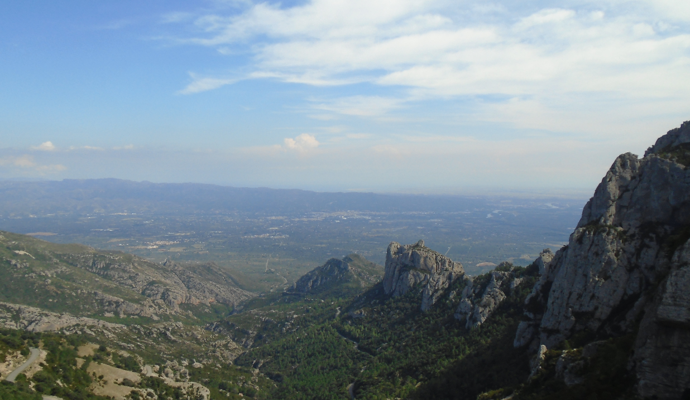
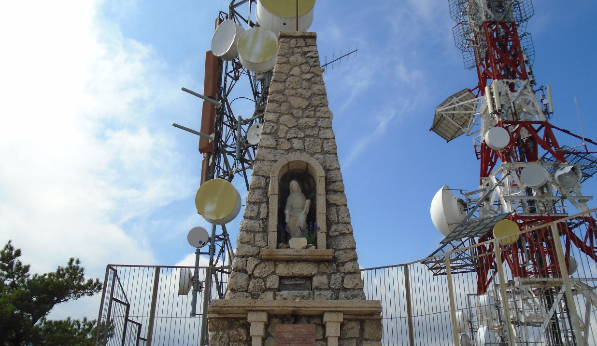
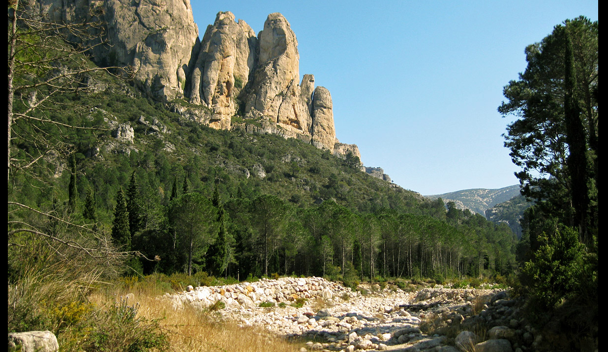
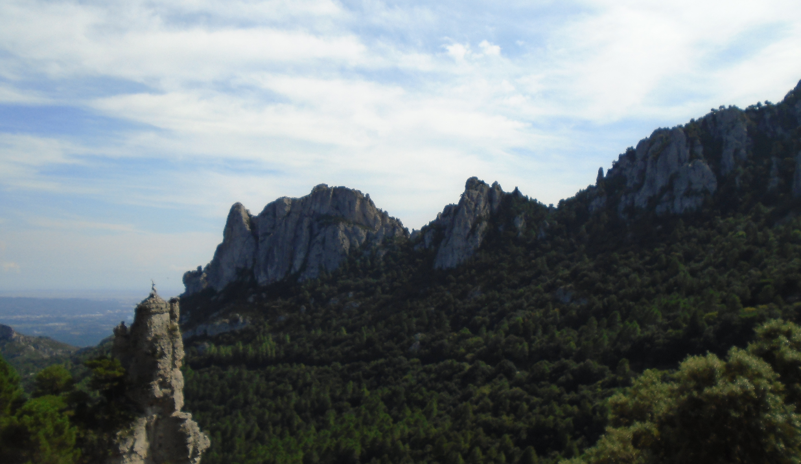

Parc Natural dels Ports
un espai natural protegit situat al sud de la provincia de Tarragona, Catalunya, en les comarques Baix Ebre, Montsià i Terra Alta.

Cim del Caro
En el cim del Caro podem trobar una escultura religiosa que podem visitar i on podem trobar un llibre per a deixar una marca personalitzada a mesura de que has estat allí

La Vall (Mas de Barberáns)
Foto feta des de la vista de la vall del municipi Mas de Barberáns

Antenes del Caro
al cim del mont caro podrem trobar les antenes que s'utilitzen per a la telecomunicació

Monument
el monument de la cabra salvatge que la podem trobar al pujar al cim